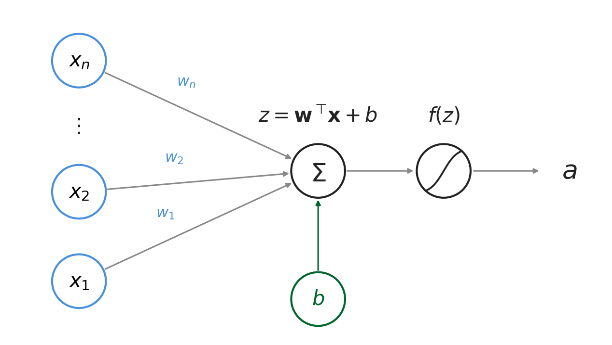
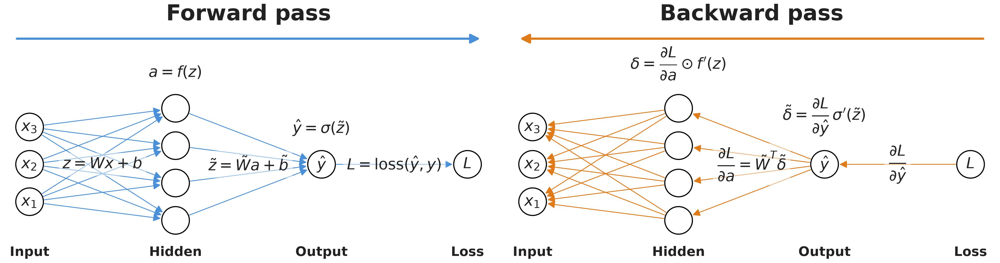

Navigation: <-- When Shallow Models Fail | Part Index | Main Index | Convolutional Neural Networks (CNNs) -->
Building Blocks of Deep Networks
Requires: When Shallow Models Fail · Gradient Descent
Motivation: In 🖝 When Shallow Models Fail, you saw that learning features is usually necessary for raw images, audio, and sequences. "Learning features automatically" needs appropriate models. What is the smallest building block of a neural network, how do they gain the ability to learn complex features, and how do models update based on prediction errors?
You'll see how a single neuron computes a prediction, how stacking neurons into layers builds increasingly abstract representations, and how backpropagation and gradient descent are used for adjusting weights (training). You will also meet some common techniques applied during training: dropout and early stopping. Both control overfitting in deep networks.
Interactive demo note: You can play around with a simple classification neural network in the Neural Networks demo from my ✪ interactive data-science demos repository.
Table of Contents
- Single Neuron: Weighted Sum and Activation
- Layers and Network Architecture
- Training: Backpropagation and Optimization
- Summary
Single Neuron: Weighted Sum and Activation
Here's a visual layout of a neuron that follows the familiar structure from 🖝 Logistic Regression:

A neuron takes a vector of inputs \(\mathbf{x} = (x_1, x_2, \ldots, x_n)\), multiplies each input by a weight \(w_i\), sums the results, adds a bias \(b\), and passes the sum through a nonlinear function:
The function \(f\) is called the activation function. It is the nonlinear element of deep networks. Without it, stacking neurons would still produce a linear model because any combination of weighted sums is itself a weighted sum. However, nonlinearity is crucial for being able to represent complex functions.
Two activation functions dominate modern practice:
- ReLU (Rectified Linear Unit): \(f(z) = \max(0, z)\). Outputs \(z\) for positive inputs, zero otherwise. Fast to compute, does not saturate for positive inputs, and trains well in deep networks. The practical default for hidden layers.
- Sigmoid: \(f(z) = 1 / (1 + e^{-z})\), which squashes output to \((0, 1)\). Used for output neurons in binary classification to produce a probability score. It is rarely used elsewhere in neural networks today because gradients become very small for large \(|z|\) (the saturation problem). A single neuron with a sigmoid output is essentially 🖝 Logistic Regression.
- Tanh: \(f(z) = \tanh(z)\), which squashes output to \((-1, 1)\). Zero-centered (unlike sigmoid), which can make learning slightly faster. Like sigmoid, it saturates for large \(|z|\), so it is less common in deep hidden layers but still used in some recurrent networks.

Activation functions provide nonlinearity. However, the power of neural networks comes from combining many neurons in layers.
Layers and Network Architecture
When neurons are stacked side by side they form a layer. The output of one layer becomes the input to the next. A network with one or more intermediate layers between the inputs and the output is called a deep network, where "deep" refers to the number of layers.
Here's an example from the interactive demo: a fully connected network for binary classification, with one input layer of \(2\) features, two hidden layers of neurons, and one output neuron with a sigmoid activation. The output is the model's predicted probability that the input belongs to the positive class.

To compute the output of a neural network, a forward pass is used (see also the figure in the training section below). Computations flow from left to right: each layer transforms its input into a new representation by applying its weights and activation. Each transformation extracts more abstract structure from the input.
Architecture choices
The example above is just one of many. For building actual applications with neurals networks, there are many architectures to choose frmo. Some work better than others, some are designed for specific prediction tasks and data domains.
The architecture part of deep learning is essentially just about stacking together highly parametrized components to form expressive trainable functions. This is done in a sophisticated way.
Standard architectural choices include the numbers and types of layers, the number of neurons per layer, and the activation function at each layer. The output layer and the loss function are chosen jointly to match the prediction task:
- Binary classification: one output neuron with sigmoid activation, using binary cross-entropy loss as introduced in 🖝 Logistic Regression.
- Multi-class classification: one output neuron per class with softmax activation (outputs sum to 1), using categorical cross-entropy as loss.
- Regression: one output neuron with no activation (linear output); loss is mean squared error as introduced in 🖝 Linear Regression.
As with all machine learning models already discussed in this course, the loss measures how "good" the network's predictions are. Training minimizes this loss across all examples by adjusting the weights, which are the trainable parameters.
Training: Backpropagation and Optimization
Training adjusts all weights in the network to minimize the loss. This requires the gradient of the loss with respect to every weight. Intuitively, the gradient informs the optimizer which direction to step.
Backpropagation (Rumelhart et al., 1986) computes these gradients efficiently. Starting from the output, it applies the chain rule of calculus layer by layer, propagating the gradient signal backward through the network. The result is the exact gradient for every weight, computed in one backward pass.

Note: Backpropagation is not a learning algorithm on its own, it just computes gradients. 🖝 Gradient Descent-like algorithms clarify how actual updates to parameters are carried out. The two work together: "backprop" computes the direction, the optimizer takes the step.
The practical default optimizer for deep networks is Adam (Adaptive Moment Estimation) (Kingma & Ba, 2015). Adam extends gradient descent with per-parameter adaptive learning rates and momentum, which makes it converge faster on most tasks and requires less manual tuning of the learning rate.
To avoid overfitting during training, two standard techniques are:
- Dropout (Srivastava et al., 2014) randomly zeroes a fraction of neurons during each training step, forcing the network to develop redundant representations rather than relying on individual neurons.
- Early stopping monitors validation loss during training and saves the model at its minimum.
Discussion: Dropout adds noise to training; early stopping halts optimization before convergence. Both improve generalization despite seemingly making training worse or shorter. Why does adding noise or stopping early prevent overfitting, and what assumption about the training data do both interventions exploit?
Summary
- A neuron computes a weighted sum of its inputs, adds a bias, and passes the result through an activation function. The nonlinearity, sigmoid for output probabilities and ReLU for hidden layers, is what allows networks to represent non-linear relationships.
- Deep networks stack neurons into layers. Architecture choices involve number of layers, neurons per layer, and activation functions. The output layer and loss function are chosen to match the task: for example, cross-entropy for classification, mean squared error for regression.
- The forward pass builds progressively more abstract representations. Backpropagation computes gradients for all weights simultaneously by applying the chain rule from output to input. Gradient descent (in practice the Adam optimizer) uses these gradients to update weights.
- Dropout and early stopping are standard training-time techniques to reduce overfitting.
As always: Happy learning, happy life! 🫶
Navigation: <-- When Shallow Models Fail | Part Index | Main Index | Convolutional Neural Networks (CNNs) -->
Script v1.7 (2026-07-28) · FGN